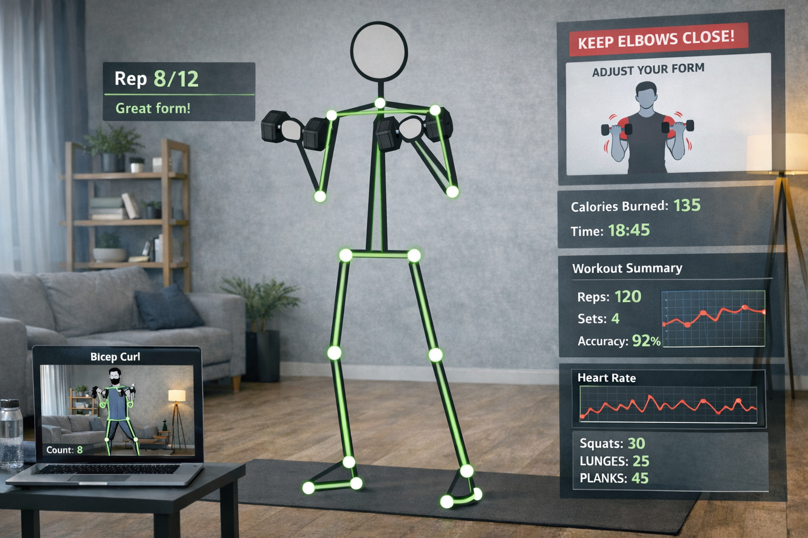

Projects
Projects from my resume, with quick links and visuals

Object detection using Turtlebot 4
Operating through ROS with real time perception and object classification using YOLOv8n.
ROS
YOLOv8n
Perception
Robotics

Smart Agriculture System
Automatic hydroponics system with monitoring using ESP32, sensors, ML, and Firebase integration.
ESP32
Sensors
IoT
Firebase

Spider Mimic Quadruped
Developed a four legged bio inspired robot with mechanical modeling using Arduino, IoT, and AutoCAD.
Arduino
AutoCAD
Mechanical
Robotics
Bank Loan Modelling
Loan approval prediction workflow comparing Linear Regression and XGBoost, with reproducible feature
preparation.
Python
XGBoost
ML
Finance

AI Fitness Trainer
Virtual AI coach for personalized workout recommendations and progress guidance using OpenPose for CV.
OpenPose
CV
AI
Health
Traffic VLM
Offline VLM pipeline for traffic CCTV scene understanding and retrieval using Qwen-VL and LLaVA.
VLM
LLM
Computer Vision
Streamlit
Stock Price Direction Predictor
Direction classifier combining technical indicators and sentiment analysis with an interactive dashboard.
XGBoost
Sentiment Analysis
Finance
Dashboard